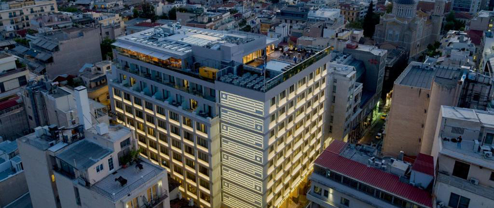
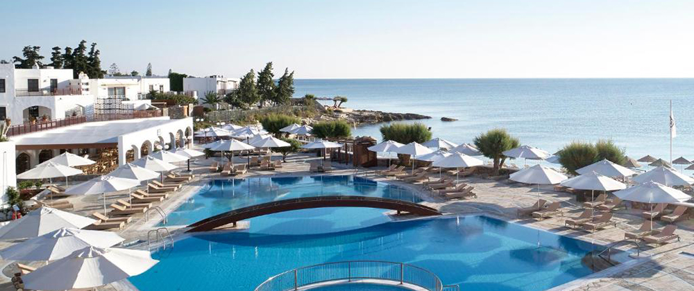
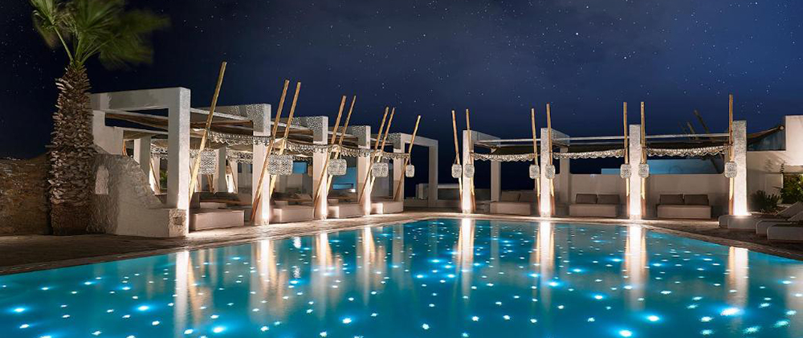

Курортный спа-отель класса люкс Stella Island расположен в районе Аналипси, в 5 км от города Херсониссос и в 300 метрах от песчаного пляжа. К услугам гостей спа-центр с широким спектром услуг и протянувшийся вдоль курортного отеля бассейн в стиле лагуны. Гостям предлагаются красиво оформленные и со вкусом меблированные номера, бунгало и виллы с прямым доступом к уникальному бассейну в форме лагуны. Для наиболее комфортного проживания предоставляются халаты, тапочки и бесплатные туалетно-косметические принадлежности.
Electra Metropolis

Современный отель Electra Metropolis расположен в центре Афин, всего в 200 метрах от площади Синтагма. В распоряжении гостей небольшой бассейн на крыше с эффектом водопада и терраса для загара с видом на город. Гости могут отведать деликатесы и освежающие коктейли в ресторан на верхнем этаже или в баре M с панорамным видом на Акрополь. Элегантные номера и люксы отеля Electra Metropolis оформлены в современном стиле в теплых тонах, в них настелен деревянный пол. В каждом номере к услугам гостей отделанная мраморной плиткой ванная комната с феном, халатами, тапочками и органическими туалетно-косметическими принадлежностями марки Korres. В числе стандартных удобств — рабочий стол, 40-дюймовый телевизор со спутниковыми каналами и технологией Smart TV, сейф для ноутбука и мини-бар.
Creta Maris Beach

Из 5-звездочного курортного отеля Creta Maris Beach типа «все включено» открывается вид на отмеченный знаком «Голубой флаг» пляж Херсониссоса. В отеле поддерживаются принципы сознательного отношения к окружающей среде. Гости по достоинству оценят традиционное критское гостеприимство и эксклюзивное обслуживание. К услугам гостей 6 открытых и 1 крытый бассейны с подогревом, 6 детских бассейнов, аквапарк, кинотеатр под открытым небом, различные спортивные сооружения, в том числе центр водных видов спорта и дайвинга, фитнес-центр и детская игровая площадка. В интерьерах этого эко-курорта сочетаются традиции и изысканность. В просторных номерах, оформленных в теплых естественных тонах, установлены удобные кресла.
Palladium

Отель Palladium расположен в поселке Платис-Гиалос, в 5 минутах ходьбы от пляжей Псару и Платис-Гиалос и всего в нескольких шагах от знаменитого ресторана Nammos. На территории этого 5-звездочного отеля работает бесплатный Wi-Fi, имеется открытый и крытый бассейн с подогревом, роскошный спа-центр и модный бутик. Кроме того, в распоряжении гостей современный фитнес-центр и сауна. Все номера и люксы оформлены в элегантном стиле, в каждом из них есть кондиционер, гостиная зона, телевизор с плоским экраном и спутниковыми каналами и меблированный отдельный балкон. Все номера оснащены кофемашиной, феном и гладильными принадлежностями. В собственной ванной комнате предоставляются туалетно-косметические принадлежности Korres. В некоторых номерах имеется собственный бассейн или гидромассажная ванна.